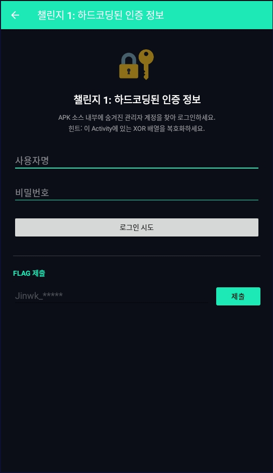
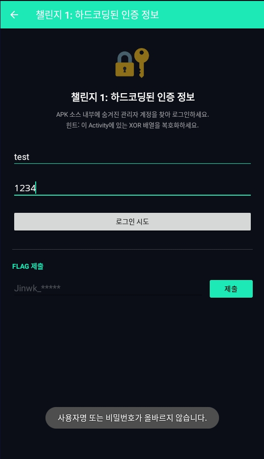
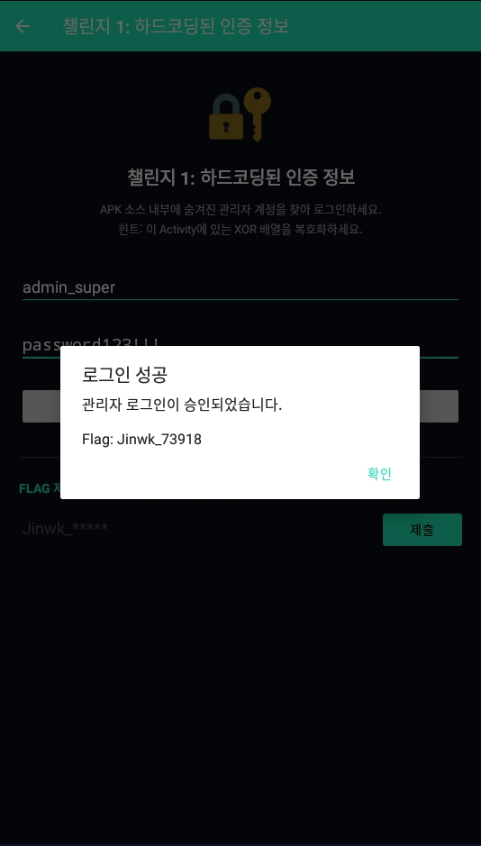
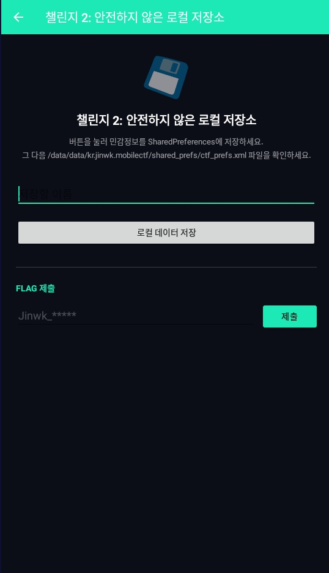
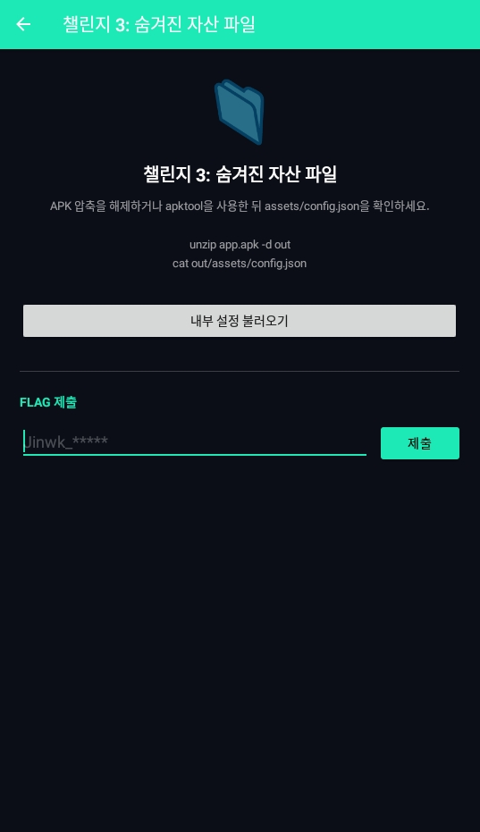
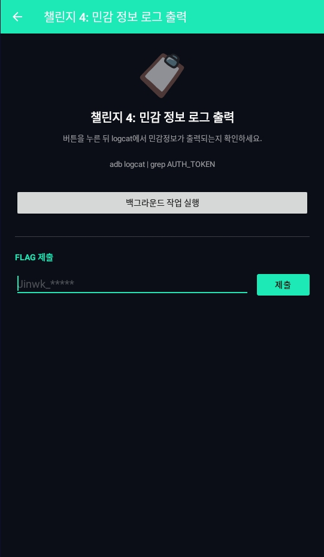
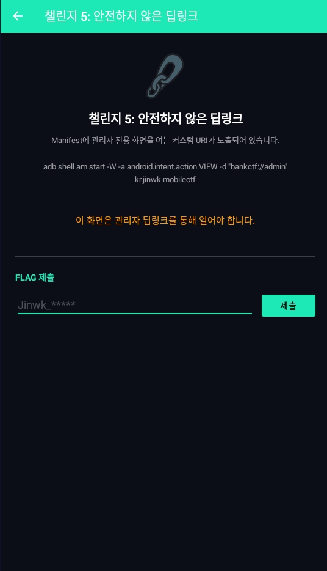
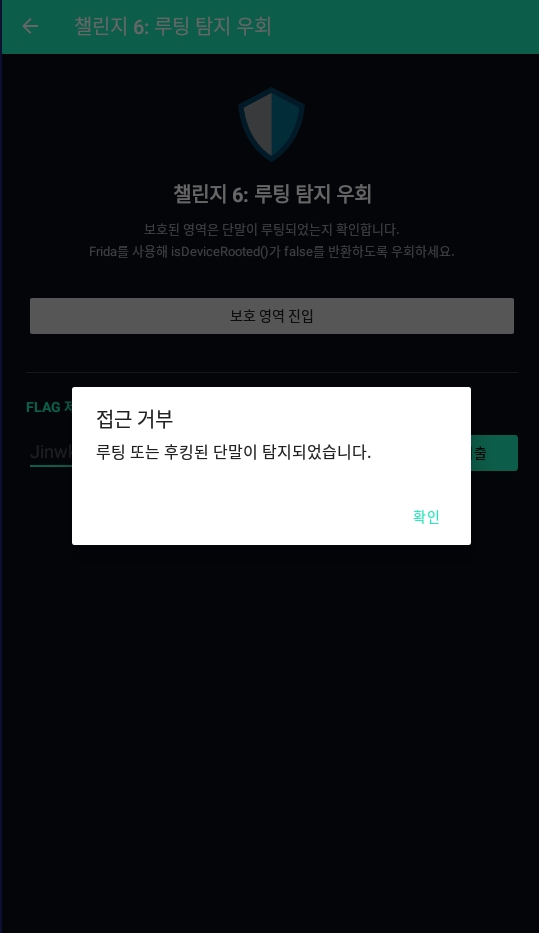
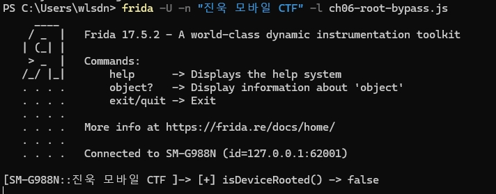
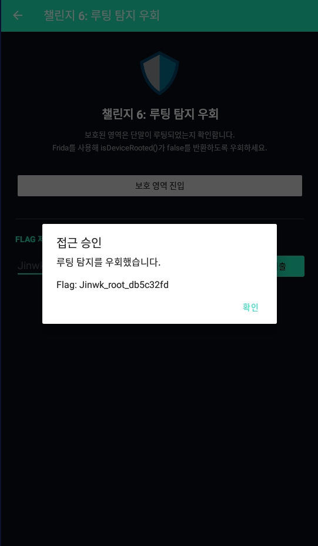

Jinwk CTF Lab 모바일 CTF 풀이 과정 및 대응 방안
Android APK를 대상으로 정적 분석과 동적 분석을 수행하며, 각 챌린지에서 취약점이 발생하는 원인과 실제 서비스 적용 시 필요한 보안대책을 함께 정리한 문서입니다.
챌린지 1 - 하드코딩된 인증 정보
챌린지 1은 APK 내부 코드에 숨겨진 관리자 계정을 찾아 로그인하는 정적 분석 문제입니다. 화면에는 사용자명과 비밀번호 입력창만 제공되며, 정상적인 UI만으로는 관리자 계정을 알 수 없습니다.

[그림] 챌린지 1 진입 화면 - 사용자명과 비밀번호 입력을 요구합니다.
임의의 계정 값을 입력하면 로그인에 실패합니다. 따라서 입력값을 추측하는 방식이 아니라, APK를 디컴파일해 인증 로직과 계정 생성 방식을 확인해야 합니다.

[그림] 임의 계정 입력 시 로그인 실패 메시지가 출력됩니다.
코드 분석 결과, Ch01_HardcodedCredentialsActivity 내부에는 사용자명과 비밀번호가 평문으로 들어 있지는 않았지만 각각 encodedUsername, encodedPassword라는 정수 배열로 저장되어 있었습니다. 로그인 버튼을 누르면 앱은 이 배열을 XorHelper.decode() 함수로 복호화한 뒤, 입력값과 비교합니다.
아래 값은 APK를 JADX로 디컴파일한 뒤 Ch01_HardcodedCredentialsActivity에서 확인한 실제 인증 관련 코드입니다. 사용자명과 비밀번호는 평문 대신 정수 배열 형태로 저장되어 있고, 각각 다른 XOR 키로 복호화됩니다.
JADX 분석 결과 - Ch01_HardcodedCredentialsActivity
private val encodedUsername = intArrayOf(
48, 53, 60, 56, 63, 14, 34, 36, 33, 52, 35
)
private val encodedPassword = intArrayOf(
34, 51, 33, 33, 37, 61, 32, 54, 99, 96, 97, 115, 115, 115
)
val username = XorHelper.decode(encodedUsername, 0x51)
val password = XorHelper.decode(encodedPassword, 0x52)
XorHelper.decode() 함수는 배열의 각 숫자에 지정된 키를 XOR 연산한 뒤 문자로 변환합니다. XOR는 같은 키로 다시 연산하면 원래 값으로 돌아오는 특성이 있기 때문에, 이 코드에서는 인코딩과 복호화가 같은 방식으로 처리됩니다.
JADX 분석 결과 - XorHelper.decode()
object XorHelper {
fun decode(encoded: IntArray, key: Int): String {
return String(encoded.map { (it xor key).toChar() }.toCharArray())
}
}
예를 들어 사용자명 첫 번째 값은 48이고, 사용자명 복호화 키는 0x51입니다. 48 xor 0x51을 계산하면 문자 a가 됩니다. 같은 방식으로 배열 전체를 계산하면 관리자 사용자명이 완성됩니다.
XOR 계산 흐름
사용자명:
48 xor 0x51 = 'a'
53 xor 0x51 = 'd'
60 xor 0x51 = 'm'
56 xor 0x51 = 'i'
63 xor 0x51 = 'n'
...
비밀번호:
34 xor 0x52 = 'p'
51 xor 0x52 = 'a'
33 xor 0x52 = 's'
33 xor 0x52 = 's'
37 xor 0x52 = 'w'
...
복호화 결과
사용자명: admin_super
비밀번호: password123!!!
Flag: Jinwk_73918
로그인 성공 시 출력되는 Flag도 같은 방식으로 숨겨져 있습니다. 로그인 정보가 일치하면 앱은 아래 배열을 0x41 키로 XOR 복호화하여 최종 Flag를 화면에 출력합니다.
JADX 분석 결과 - 로그인 성공 시 Flag 복호화 코드
val flag = XorHelper.decode(
intArrayOf(11, 40, 47, 54, 42, 30, 118, 114, 120, 112, 121),
0x41
)
복호화 결과:
Jinwk_73918
도출된 사용자명과 비밀번호를 앱 로그인 화면에 입력하면 관리자 로그인이 승인되고, 앱은 내부에 숨겨진 Flag를 출력합니다. 이후 출력된 Flag를 하단의 FLAG 제출 영역에 입력하면 챌린지가 해결됩니다.

[그림] XOR 복호화로 도출한 계정 입력 후 관리자 로그인이 승인되고 Flag가 출력됩니다.
- 풀이 흐름: 로그인 실패 확인 → APK 정적 분석 → XOR 배열과 키 확인 → 계정 정보 복호화 → 로그인 성공 → Flag 제출
- 취약 원인: 계정 값이 평문이 아니더라도, 복호화에 필요한 배열·키·복호화 로직이 모두 APK 내부에 존재합니다.
- 영향도: 공격자가 APK를 분석해 관리자 계정을 재구성하고 인증을 우회할 수 있습니다.
대응 방안
- 관리자 계정, API Key, 암호화 키와 같은 민감정보를 APK 내부에 포함하지 않습니다.
- 로그인 검증은 클라이언트가 아니라 서버에서 수행하고, 앱은 서버의 인증 결과만 전달받도록 설계합니다.
- 고정된 Secret 값이 필요한 경우 Android Keystore 또는 서버 기반 키 관리 구조를 사용합니다.
- 난독화는 보조 수단으로만 사용하고, 복호화 키와 복호화 로직이 한 APK 안에 함께 들어가지 않도록 분리합니다.
챌린지 2 - 안전하지 않은 로컬 저장소
챌린지 2는 앱이 민감정보를 로컬 저장소에 안전하지 않게 저장하는지 확인하는 정적 분석 문제입니다. 화면에서는 이름을 입력하고 로컬 데이터 저장 버튼을 누르도록 안내합니다.

[그림] 챌린지 2 진입 화면 - 입력한 이름과 민감정보를 로컬 데이터로 저장합니다.
JADX로 Ch02_InsecureDataStorageActivity를 확인한 결과, 로컬 데이터 저장 버튼을 누르면 SharedPreferences 이름을 ctf_prefs로 생성하고, secret_flag, saved_username, session_token 값을 저장합니다. 이 값들은 앱 내부 저장소의 XML 파일에 기록됩니다.
JADX 분석 결과 - Ch02_InsecureDataStorageActivity
val prefs = getSharedPreferences("ctf_prefs", Context.MODE_PRIVATE)
prefs.edit()
.putString("secret_flag", "Jinwk_29471")
.putString("saved_username", etName.text.toString())
.putString("session_token", "eyJhbGciOiJIUzI1NiJ9.admin.secret")
.apply()
SharedPreferences는 앱 내부 경로에 XML 파일로 저장됩니다. 따라서 디버그 가능 환경이나 루팅 환경에서는 해당 파일을 직접 확인해 저장된 민감정보를 추출할 수 있습니다.
저장 파일 확인 명령
adb shell run-as kr.jinwk.mobilectf ls shared_prefs
adb shell run-as kr.jinwk.mobilectf cat shared_prefs/ctf_prefs.xml
확인 가능한 주요 값
SharedPreferences 파일명: ctf_prefs.xml
Flag Key: secret_flag
Flag Value: Jinwk_29471
Session Token: eyJhbGciOiJIUzI1NiJ9.admin.secret
ctf_prefs.xml에서 secret_flag 값을 확인한 뒤, 앱 하단의 FLAG 제출 영역에 Jinwk_29471을 입력하면 챌린지를 해결할 수 있습니다.
- 풀이 흐름: 로컬 데이터 저장 실행 → SharedPreferences 생성 확인 → ctf_prefs.xml 조회 → secret_flag 추출 → Flag 제출
- 취약 원인: Flag와 세션 토큰이 암호화되지 않은 상태로 로컬 XML 파일에 저장됩니다.
- 영향도: 단말 탈취, 백업 파일 노출, 루팅 환경에서 세션 토큰과 민감정보가 유출될 수 있습니다.
대응 방안
- 토큰, 인증정보, Flag와 같은 민감정보는 SharedPreferences에 평문으로 저장하지 않습니다.
- 반드시 저장이 필요한 값은 Android Keystore 기반 암호화 저장소를 사용합니다.
- 세션 토큰은 만료 시간을 짧게 설정하고, 재사용 가능 범위를 최소화합니다.
- 자동 백업 대상에서 민감 저장소를 제외하고, 릴리즈 빌드에서 디버그 가능 설정을 비활성화합니다.
챌린지 3 - 숨겨진 자산 파일
챌린지 3은 APK 내부 assets 디렉터리에 포함된 설정 파일을 확인하는 정적 분석 문제입니다. 앱 화면에서도 assets/config.json을 확인하라는 힌트를 제공하고 있습니다.

[그림] 챌린지 3 진입 화면 - APK 내부 assets/config.json 확인을 요구합니다.
Android APK는 ZIP 구조를 기반으로 하므로 압축을 해제하면 assets, res, lib 등의 내부 파일을 확인할 수 있습니다. 이 문제에서는 assets/config.json 파일 안에 운영 환경 정보와 관리자 Secret 값이 포함되어 있습니다.
APK 압축 해제 및 assets 파일 확인
unzip app-release.apk -d apk_out
type apk_out\assets\config.json
실제 프로젝트의 assets/config.json에는 아래와 같은 값이 저장되어 있습니다. 이 파일은 앱 실행에 필요한 설정처럼 보이지만, admin_secret_key 값이 그대로 포함되어 있어 정적 분석만으로 Flag를 확인할 수 있습니다.
assets/config.json
{
"app_name": "Jinwk CTF Lab",
"version": "1.0.0",
"environment": "production",
"admin_secret_key": "Jinwk_84920",
"api_base_url": "https://api.internal.jinwk-ctf.local",
"debug_mode": false
}
admin_secret_key 값인 Jinwk_84920을 앱 하단의 FLAG 제출 영역에 입력하면 챌린지를 해결할 수 있습니다.
- 풀이 흐름: APK 압축 해제 → assets/config.json 확인 → admin_secret_key 값 추출 → Flag 제출
- 취약 원인: 운영 환경 정보와 Secret 값이 APK 내부 assets 파일에 포함되어 있습니다.
- 영향도: 내부 API 주소, 운영 환경 정보, 관리자 Secret이 노출되어 추가 공격에 활용될 수 있습니다.
대응 방안
- 관리자 Secret, API Key, 내부 토큰을 APK assets 또는 리소스 파일에 포함하지 않습니다.
- 환경별 설정 파일을 빌드할 때 운영 Secret이 포함되지 않도록 CI/CD 단계에서 검사합니다.
- 내부 API 주소가 노출되더라도 인증과 인가가 서버 측에서 강제되도록 설계합니다.
- 클라이언트에 필요한 설정값과 서버에서만 관리해야 하는 Secret 값을 명확히 분리합니다.
챌린지 4 - 민감 정보 로그 출력
챌린지 4는 앱이 민감정보를 Logcat에 출력하는지 확인하는 정적 분석 문제입니다. 화면에서는 백그라운드 작업을 실행한 뒤 AUTH_TOKEN 로그를 확인하라는 힌트를 제공합니다.

[그림] 챌린지 4 진입 화면 - 작업 실행 후 logcat에서 AUTH_TOKEN 확인을 요구합니다.
JADX로 Ch04_InsecureLoggingActivity를 확인한 결과, 버튼 클릭 시 encodedFlag를 0x44 키로 XOR 복호화한 뒤 AUTH_TOKEN 태그로 Logcat에 출력하는 로직이 존재합니다.
JADX 분석 결과 - Ch04_InsecureLoggingActivity
private val encodedFlag = intArrayOf(
14, 45, 42, 51, 47, 27, 113, 117, 116, 119, 112
)
val token = XorHelper.decode(encodedFlag, 0x44)
Log.d("AUTH_TOKEN", "Generated Token: $token")
encodedFlag 배열을 0x44 키로 XOR 복호화하면 Logcat에 출력되는 토큰 값을 정적 분석만으로 확인할 수 있습니다.
XOR 복호화 결과
encodedFlag key: 0x44
Generated Token: Jinwk_51034
실제 앱을 실행하는 경우에는 아래 명령으로 AUTH_TOKEN 로그를 확인할 수 있습니다. 하지만 이 챌린지는 코드에 복호화 배열과 키가 함께 존재하므로 정적 분석만으로도 Flag를 도출할 수 있습니다.
Logcat 확인 명령
adb logcat | findstr AUTH_TOKEN
- 풀이 흐름: JADX 분석 → encodedFlag 배열과 0x44 키 확인 → XOR 복호화 → Jinwk_51034 제출
- 취약 원인: 민감 토큰이 로그 출력 로직에 포함되어 있고, 복호화 데이터와 키가 APK 내부에 존재합니다.
- 영향도: 운영 환경에서 인증 토큰, 관리자 작업 정보, 내부 상태값이 로그를 통해 노출될 수 있습니다.
대응 방안
- Release 빌드에서는 인증정보, 토큰, 개인정보, 내부 Secret을 로그로 출력하지 않습니다.
- 디버그 로그와 운영 로그 정책을 분리하고, 빌드 타입에 따라 민감 로그가 제거되도록 설정합니다.
- Logcat, Crash Report, MDM 로그 수집 대상에 민감정보가 포함되지 않도록 마스킹 정책을 적용합니다.
- 토큰은 노출 가능성을 전제로 짧은 만료 시간과 재발급/폐기 정책을 함께 적용합니다.
챌린지 5 - 안전하지 않은 딥링크
챌린지 5는 외부에서 호출 가능한 딥링크가 관리자 전용 화면으로 연결되는지 확인하는 정적 분석 문제입니다. 앱 화면에는 관리자 딥링크를 통해 접근해야 한다는 안내가 표시됩니다.

[그림] 챌린지 5 진입 화면 - 일반 접근 시 관리자 딥링크를 요구합니다.
AndroidManifest.xml을 확인하면 Ch05_InsecureDeepLinkingActivity가 exported=true로 설정되어 있고, bankctf://admin URI를 처리하는 intent-filter가 등록되어 있습니다.
JADX/Manifest 분석 결과 - AndroidManifest.xml
Activity 내부에서는 Intent의 scheme이 bankctf이고 host가 admin이면 딥링크 접근으로 판단합니다. 조건이 일치하면 encodedFlag를 0x45 키로 XOR 복호화하여 Flag를 화면에 출력합니다.
JADX 분석 결과 - Ch05_InsecureDeepLinkingActivity
val fromDeepLink = intent?.data?.scheme == "bankctf"
&& intent?.data?.host == "admin"
if (fromDeepLink) {
val flag = XorHelper.decode(encodedFlag, 0x45)
text = "딥링크 접근이 승인되었습니다.\n\nFlag: $flag"
}
Flag 복호화 값
encodedFlag: 15, 44, 43, 50, 46, 26, 124, 124, 119, 117, 116
XOR key: 0x45
Flag: Jinwk_99201
실제 앱에서 딥링크를 호출하려면 아래 명령을 사용할 수 있습니다. 정적 분석 관점에서는 Manifest의 exported 설정과 URI scheme/host, 그리고 Activity 내부 Flag 복호화 로직을 확인하면 풀이가 가능합니다.
딥링크 호출 명령
adb shell am start -W -a android.intent.action.VIEW -d "bankctf://admin" kr.jinwk.mobilectf
- 풀이 흐름: Manifest 분석 → exported=true 및 bankctf://admin 확인 → Activity 조건문 확인 → Flag 복호화 → Jinwk_99201 제출
- 취약 원인: 외부 호출 가능한 Activity가 관리자 기능 접근 조건으로 딥링크 값만 확인합니다.
- 영향도: 외부 앱이나 브라우저에서 관리자 화면을 직접 호출해 인증 우회 또는 민감 기능 실행으로 이어질 수 있습니다.
대응 방안
- 외부 호출이 필요하지 않은 Activity는 exported=false로 설정합니다.
- 딥링크로 진입한 뒤에도 로그인 세션, 사용자 권한, 서버 측 인가를 반드시 검증합니다.
- scheme과 host만으로 관리자 기능 접근을 허용하지 않고, Intent 파라미터를 엄격히 검증합니다.
- 가능하면 Android App Links 검증을 적용해 신뢰된 도메인 기반으로만 링크를 처리합니다.
챌린지 6 - 루팅 탐지 우회
챌린지 6은 루팅 탐지 로직을 Frida로 우회하는 동적 분석 문제입니다. 보호 영역 진입 버튼을 누르면 앱은 isDeviceRooted() 함수를 호출하고, 반환값이 true이면 접근을 차단합니다.

[그림] 챌린지 6 진입 화면 - 보호 영역 진입 시 루팅 탐지 로직이 실행됩니다.
Frida 후킹을 적용하지 않은 상태에서 보호 영역 진입 버튼을 누르면 접근 거부 팝업이 출력됩니다. 이는 isDeviceRooted() 함수가 true를 반환하기 때문입니다.

[그림] 정상 실행 흐름에서는 루팅 또는 후킹된 단말로 판단되어 접근이 거부됩니다.
JADX로 Ch06_RootingBypassActivity를 확인한 결과, isDeviceRooted() 함수가 항상 true를 반환하도록 구현되어 있습니다. 따라서 정상 실행 흐름에서는 항상 루팅 또는 후킹된 단말로 판단되어 접근이 거부됩니다.
JADX 분석 결과 - Ch06_RootingBypassActivity
fun isDeviceRooted(): Boolean {
return true
}
btnCheck.setOnClickListener {
if (isDeviceRooted()) {
AlertDialog.Builder(this)
.setTitle("접근 거부")
.setMessage("루팅 또는 후킹된 단말이 탐지되었습니다.")
.show()
} else {
val flag = newRuntimeFlag("root")
runtimeFlagHash = FlagChecker.sha256(flag)
AlertDialog.Builder(this)
.setTitle("접근 승인")
.setMessage("루팅 탐지를 우회했습니다.\n\nFlag: $flag")
.show()
}
}
이 문제는 정적 분석으로 고정된 Flag를 찾는 방식이 아닙니다. 접근 승인 시 newRuntimeFlag("root")가 호출되어 매번 새로운 Flag가 생성되므로, 런타임에서 isDeviceRooted()의 반환값을 false로 바꿔 성공 화면을 띄워야 합니다.
Frida 우회 스크립트 - ch06-root-bypass.js
Java.perform(function () {
var Ch06 = Java.use("kr.jinwk.mobilectf.challenges.Ch06_RootingBypassActivity");
Ch06.isDeviceRooted.implementation = function () {
console.log("[+] isDeviceRooted() hooked -> false");
return false;
};
});
Frida 실행 명령
frida -U -n "진욱 모바일 CTF" -l ch06-root-bypass.js

[그림] 실행 중인 앱 프로세스에 Frida를 연결하고 isDeviceRooted() 반환값을 false로 변경했습니다.
Frida 스크립트가 적용된 상태에서 보호 영역 진입 버튼을 누르면 isDeviceRooted()가 false를 반환하고, 앱은 루팅 탐지가 우회된 것으로 판단하여 접근 승인 팝업과 런타임 Flag를 출력합니다.

[그림] Frida 후킹 적용 후 접근이 승인되고 런타임 Flag가 출력됩니다.
- 풀이 흐름: JADX 분석 → isDeviceRooted()가 true를 반환하는지 확인 → Frida로 false 반환 후킹 → 보호 영역 진입 → 런타임 Flag 확인
- 취약 원인: 루팅 탐지 결과가 클라이언트 내부 단일 함수의 반환값에만 의존합니다.
- 영향도: 공격자가 런타임 후킹으로 보안 검사를 우회하고 보호된 기능에 접근할 수 있습니다.
- 검증 결과: isDeviceRooted() 반환값을 false로 조작하여 보호 영역 접근과 Flag 획득에 성공했습니다.
대응 방안
- 루팅 탐지를 단일 함수 반환값에만 의존하지 않고, 여러 탐지 신호를 조합해 판단합니다.
- 루팅 탐지 결과를 클라이언트에서만 처리하지 않고 서버 측 리스크 판단과 연계합니다.
- 중요 기능 접근 전 앱 무결성, 디버거 연결, 후킹 프레임워크 흔적을 함께 점검합니다.
- 탐지 로직 난독화와 무결성 검증을 적용하되, 난독화만으로 보안이 보장된다고 판단하지 않습니다.
- 결제, 인증, 권한 부여 같은 핵심 결정은 서버에서 최종 검증하도록 설계합니다.
챌린지 7 - 생체인증 우회
챌린지 7은 생체인증 성공 콜백을 Frida로 직접 호출하는 동적 분석 문제입니다. 앱 화면의 인증하기 버튼을 누르면 정상 UI 흐름에서는 항상 인증 실패 함수가 호출됩니다.

[그림] 챌린지 7 진입 화면 - 일반 UI 흐름에서는 성공 콜백이 호출되지 않습니다.
인증하기 버튼을 누르면 생체인증 성공 로직이 아니라 실패 로직이 실행됩니다. 따라서 정상 UI 조작만으로는 Flag를 얻을 수 없습니다.

[그림] 인증하기 버튼 클릭 시 인증 실패 메시지가 출력됩니다.
JADX로 Ch07_BiometricBypassActivity를 확인한 결과, 인증 성공 시 Flag를 생성하는 onAuthenticationSucceeded() 함수가 존재하지만, 일반 버튼 클릭 흐름에서는 이 함수가 호출되지 않습니다. 버튼 클릭 시에는 onAuthenticationFailed()만 호출되므로 Frida로 성공 콜백을 직접 실행해야 합니다.
JADX 분석 결과 - Ch07_BiometricBypassActivity
fun onAuthenticationSucceeded() {
val flag = newRuntimeFlag("bio")
runtimeFlagHash = FlagChecker.sha256(flag)
AlertDialog.Builder(this)
.setTitle("생체인증 성공")
.setMessage("인증이 승인되었습니다.\n\nFlag: $flag")
.show()
}
private fun onAuthenticationFailed() {
Toast.makeText(this, "인증에 실패했습니다. 후킹 대상을 확인하세요.", Toast.LENGTH_SHORT).show()
}
btnAuth.setOnClickListener {
onAuthenticationFailed()
}
이 문제 역시 정적 분석으로 고정된 Flag를 찾는 방식이 아닙니다. onAuthenticationSucceeded()가 호출될 때 newRuntimeFlag("bio")로 런타임 Flag가 생성되므로, 실행 중인 Activity 인스턴스를 찾아 성공 콜백을 호출해야 합니다.
Frida 우회 스크립트 - ch07-biometric-bypass.js
Java.perform(function () {
Java.choose("kr.jinwk.mobilectf.challenges.Ch07_BiometricBypassActivity", {
onMatch: function (instance) {
console.log("[+] Ch07 Activity instance found");
var target = Java.retain(instance);
Java.scheduleOnMainThread(function () {
console.log("[+] calling onAuthenticationSucceeded() on main thread");
target.onAuthenticationSucceeded();
});
},
onComplete: function () {
console.log("[+] scan complete");
}
});
});
Frida 실행 명령
frida -U -n "진욱 모바일 CTF" -l ch07-biometric-bypass.js

[그림] Frida로 실행 중인 Activity 인스턴스를 찾고, 메인 스레드에서 성공 콜백을 호출했습니다.
Frida 스크립트가 실행되면 현재 메모리에 올라와 있는 Ch07_BiometricBypassActivity 인스턴스를 찾아 onAuthenticationSucceeded()를 직접 호출합니다. 그 결과 앱은 생체인증이 성공한 것으로 처리하고 런타임 Flag를 출력합니다.

[그림] 성공 콜백 직접 호출 후 생체인증 성공 팝업과 런타임 Flag가 출력됩니다.
- 풀이 흐름: JADX 분석 → 정상 버튼 클릭 시 실패 콜백만 호출되는지 확인 → Frida로 Activity 인스턴스 탐색 → onAuthenticationSucceeded() 직접 호출 → 런타임 Flag 확인
- 취약 원인: 인증 성공 처리가 클라이언트 내부 콜백 호출만으로 완료됩니다.
- 영향도: 공격자가 런타임 후킹으로 생체인증 성공 흐름을 강제로 실행해 보호 기능에 접근할 수 있습니다.
- 검증 결과: onAuthenticationSucceeded()를 직접 호출하여 생체인증 성공 처리와 Flag 획득에 성공했습니다.
대응 방안
- 생체인증 성공 여부를 단순 Boolean 값이나 클라이언트 콜백 호출만으로 판단하지 않습니다.
- BiometricPrompt 인증 결과를 Android Keystore의 키 사용 조건과 연계해 인증된 사용자만 키를 사용할 수 있도록 구성합니다.
- 중요 기능 접근 전 서버 측 세션, 사용자 권한, 추가 인증 상태를 함께 검증합니다.
- 런타임 후킹 탐지, 앱 무결성 검증, 디버거 탐지를 보조 방어선으로 적용합니다.
- 생체인증 성공 후 수행되는 민감 작업은 서버에서 최종 승인하도록 설계합니다.
챌린지 8 - SSL Pinning 우회
챌린지 8은 SSL Pinning 검증 함수를 Frida로 우회하는 동적 분석 문제입니다. 보안 계정 데이터 요청 버튼을 누르면 앱은 인증서 검증 함수인 checkPinnedCertificate()를 호출합니다.

[그림] 챌린지 8 진입 화면 - 보안 계정 데이터 요청 시 Pinning 검증이 수행됩니다.
JADX 분석 결과 - Ch08_SslPinningBypassActivity
fun checkPinnedCertificate(): Boolean {
return false
}
val certValid = checkPinnedCertificate()
if (certValid) {
val token = newRuntimeFlag("tls")
runtimeFlagHash = FlagChecker.sha256(token)
Log.d("HTTPS_RESPONSE", "{\"status\":\"ok\",\"auth_token\":\"$token\"}")
tvStatus?.text = "응답을 수신했습니다. logcat에서 HTTPS_RESPONSE를 확인하세요."
} else {
Log.e("SSL_ERROR", "javax.net.ssl.SSLPeerUnverifiedException: Certificate pinning failed")
tvStatus?.text = "[SSL 오류] Certificate Pinning 검증에 실패했습니다."
}
checkPinnedCertificate() 함수가 항상 false를 반환하므로 정상 흐름에서는 SSL 오류가 발생합니다. 이 문제는 고정 Flag를 찾는 방식이 아니라, Frida로 반환값을 true로 변경해 런타임 Flag가 생성되도록 우회해야 합니다.
Frida 우회 스크립트 - ch08-ssl-pinning-bypass.js
Java.perform(function () {
var Ch08 = Java.use("kr.jinwk.mobilectf.challenges.Ch08_SslPinningBypassActivity");
Ch08.checkPinnedCertificate.implementation = function () {
console.log("[+] checkPinnedCertificate() -> true");
return true;
};
});
Frida 실행 명령
frida -U -n "진욱 모바일 CTF" -l ch08-ssl-pinning-bypass.js

[그림] Frida로 checkPinnedCertificate() 반환값을 false에서 true로 변경했습니다.
Frida 스크립트가 적용된 상태에서 보안 계정 데이터 요청 버튼을 누르면 인증서 검증이 성공한 것으로 처리됩니다. 이후 앱은 HTTPS_RESPONSE 태그로 auth_token 값을 Logcat에 출력하며, 이 값이 챌린지 8의 런타임 Flag입니다.
Logcat 확인 명령
nox_adb logcat -c
nox_adb logcat | findstr "HTTPS_RESPONSE SSL_ERROR"

[그림] Logcat의 HTTPS_RESPONSE 로그에서 런타임 Flag인 auth_token 값을 확인했습니다.
- 풀이 흐름: JADX 분석 → checkPinnedCertificate()가 false를 반환하는지 확인 → Frida로 true 반환 후킹 → 보안 계정 데이터 요청 → HTTPS_RESPONSE 로그에서 Flag 확인
- 취약 원인: SSL Pinning 성공 여부가 클라이언트 내부 단일 함수 반환값에 의존합니다.
- 영향도: 공격자가 런타임 후킹으로 인증서 검증을 우회하고 보호된 응답 데이터를 확인할 수 있습니다.
- 검증 결과: HTTPS_RESPONSE 로그에서 auth_token 값 Jinwk_tls_0236415f를 확인했습니다.
대응 방안
- SSL Pinning 검증을 단일 메서드 반환값에만 의존하지 않고, 네트워크 계층과 앱 무결성 검증을 함께 적용합니다.
- Pinning 우회 가능성을 전제로 서버 측 이상 트래픽 탐지와 세션 리스크 판단을 운영합니다.
- 민감 응답 데이터는 클라이언트 Pinning 성공 여부만 믿지 않고 서버에서 권한과 요청 무결성을 검증한 뒤 반환합니다.
- 인증서 교체와 Pinning 키 롤오버 절차를 운영해 장애와 보안성을 함께 관리합니다.
- 후킹 탐지, 디버거 탐지, 앱 변조 탐지를 보조 방어선으로 적용합니다.
챌린지 9 - 메모리 값 변조
챌린지 9는 앱 실행 중 메모리에 저장된 coins 값을 변조해 구매 조건을 우회하는 동적 분석 문제입니다. 화면에는 보유 코인이 100으로 표시되고, Flag 구매에는 999,999 코인이 필요하다고 안내됩니다.

[그림] 챌린지 9 진입 화면 - 초기 보유 코인은 100이며 Flag 구매에는 999,999 코인이 필요합니다.
JADX로 Ch09_MemoryModificationActivity를 확인한 결과, coins 값은 Activity 내부 변수로 관리됩니다. FLAG 구매 버튼을 누르면 coins가 999999 이상인지 확인하고, 조건을 만족할 때만 런타임 Flag를 생성합니다.
JADX 분석 결과 - Ch09_MemoryModificationActivity
var coins = 100
btnWork.setOnClickListener {
coins += 10
tvCoins?.text = "보유 코인: $coins"
}
btnBuy.setOnClickListener {
if (coins >= 999999) {
val flag = newRuntimeFlag("mem")
runtimeFlagHash = FlagChecker.sha256(flag)
AlertDialog.Builder(this)
.setTitle("구매 성공")
.setMessage("Flag를 구매했습니다.\n\n$flag")
.show()
} else {
Toast.makeText(this, "코인이 부족합니다. 999,999 코인이 필요합니다.", Toast.LENGTH_SHORT).show()
}
}
이 문제는 정적 분석으로 고정된 Flag를 찾는 방식이 아닙니다. 구매 성공 시 newRuntimeFlag("mem")가 호출되어 매번 새로운 Flag가 생성되므로, 런타임에서 coins 값을 999999 이상으로 변경한 뒤 구매 버튼을 눌러야 합니다.

[그림] 코인이 부족한 상태에서는 FLAG 구매가 거부됩니다.
Frida 메모리 값 변조 스크립트 - ch09-memory-modification.js
Java.perform(function () {
Java.choose("kr.jinwk.mobilectf.challenges.Ch09_MemoryModificationActivity", {
onMatch: function (instance) {
console.log("[+] Ch09 Activity instance found");
instance.coins.value = 999999;
Java.scheduleOnMainThread(function () {
console.log("[+] coins changed -> 999999");
});
},
onComplete: function () {
console.log("[+] scan complete");
}
});
});
Frida 실행 명령
frida -U -n "진욱 모바일 CTF" -l ch09-memory-modification.js

[그림] Frida로 Ch09 Activity 인스턴스를 찾고 coins 값을 999999로 변경했습니다.
Frida 스크립트가 실행되면 현재 메모리에 올라와 있는 Ch09_MemoryModificationActivity 인스턴스를 찾고, coins 값을 999999로 변경합니다. 이후 앱에서 FLAG 구매 버튼을 누르면 조건을 만족해 구매 성공 팝업과 런타임 Flag가 출력됩니다.

[그림] coins 값 변조 후 FLAG 구매에 성공하고 런타임 Flag가 출력됩니다.
- 풀이 흐름: JADX 분석 → coins 구매 조건 확인 → Frida로 coins 값을 999999로 변조 → FLAG 구매 클릭 → 런타임 Flag 확인
- 취약 원인: 구매 가능 여부가 클라이언트 메모리의 coins 값에만 의존합니다.
- 영향도: 공격자가 메모리 값을 조작해 결제, 권한, 점수, 재화와 같은 비즈니스 로직을 우회할 수 있습니다.
- 검증 결과: coins 값을 999999로 변경하여 구매 조건을 우회하고 Jinwk_mem_e8cd1036 Flag를 획득했습니다.
대응 방안
- 코인, 포인트, 결제 상태, 권한과 같은 중요 값은 클라이언트 메모리에만 의존하지 않습니다.
- 구매 가능 여부와 재화 차감 처리는 서버에서 최종 검증하고 처리합니다.
- 클라이언트의 표시 값은 참고용으로만 사용하고, 서버의 원장 데이터를 기준으로 판단합니다.
- 비정상적으로 큰 값 변경, 짧은 시간 내 반복 구매 등 이상 행위를 서버 로그에서 탐지합니다.
- 앱 무결성 검증과 런타임 후킹 탐지를 보조 방어선으로 적용합니다.
챌린지 10 - 암호키 추출
챌린지 10은 런타임에 생성되는 AES 키를 Frida로 가로채는 동적 분석 문제입니다. 앱은 Flag를 AES로 암호화한 뒤, 내부에서 decryptFlag() 함수를 호출해 복호화를 수행합니다.

[그림] 챌린지 10 진입 화면 - 런타임 AES 키를 추출해야 복호화를 수행할 수 있습니다.
JADX로 Ch10_CryptoKeyExtractionActivity를 확인한 결과, 복호화 함수 decryptFlag()는 encrypted 바이트 배열과 secretKey 문자열을 인자로 받습니다. 이 secretKey는 newAesKey()에서 런타임에 생성되므로 정적 분석만으로 고정 키를 알 수 없습니다.
JADX 분석 결과 - Ch10_CryptoKeyExtractionActivity
fun decryptFlag(encrypted: ByteArray, secretKey: String): String {
return try {
val keyBytes = secretKey.toByteArray(Charsets.UTF_8)
val keySpec = SecretKeySpec(keyBytes, "AES")
val cipher = Cipher.getInstance("AES/ECB/PKCS5Padding")
cipher.init(Cipher.DECRYPT_MODE, keySpec)
String(cipher.doFinal(encrypted), Charsets.UTF_8).trim()
} catch (e: Exception) {
"DECRYPT_ERROR"
}
}
런타임 암호화 및 복호화 흐름
private fun triggerBackgroundDecryption() {
val flag = newRuntimeFlag("aes")
val dynamicKey = newAesKey()
encryptedFlag = encryptFlag(flag, dynamicKey)
runtimeFlagHash = FlagChecker.sha256(flag)
tvEncrypted?.text = "암호문 데이터 (AES/ECB):\n${encryptedFlag.toHex()}"
val result = decryptFlag(encryptedFlag, dynamicKey)
}
이 문제는 정적 분석으로 고정된 Flag를 찾는 방식이 아닙니다. 숨겨진 복호화 실행 버튼을 누를 때마다 새로운 Flag와 AES 키가 생성됩니다. 따라서 decryptFlag()에 전달되는 secretKey 인자를 Frida로 후킹해 추출해야 합니다.

[그림] 숨겨진 복호화 실행 후 AES 암호문이 생성되고, decryptFlag() 후킹을 요구합니다.
Frida 암호키 추출 스크립트 - ch10-crypto-key-extraction.js
Java.perform(function () {
var Ch10 = Java.use("kr.jinwk.mobilectf.challenges.Ch10_CryptoKeyExtractionActivity");
Ch10.decryptFlag.implementation = function (encrypted, secretKey) {
console.log("[+] decryptFlag() called");
console.log("[+] secretKey: " + secretKey);
var result = this.decryptFlag(encrypted, secretKey);
console.log("[+] decrypted flag: " + result);
return result;
};
});
Frida 실행 명령
frida -U -n "진욱 모바일 CTF" -l ch10-crypto-key-extraction.js

[그림] Frida로 decryptFlag() 인자인 secretKey와 복호화된 Flag를 확인했습니다.
Frida 스크립트를 실행한 상태에서 앱의 숨겨진 복호화 실행 버튼을 누르면, 콘솔에 secretKey와 복호화된 Flag가 출력됩니다. 이후 앱 화면의 Secret Key 입력칸에 추출한 키를 입력하고 검증 및 복호화 버튼을 누르면 Flag를 확인할 수 있습니다.

[그림] 추출한 Secret Key를 입력해 복호화에 성공하고 최종 Flag를 확인했습니다.
- 풀이 흐름: JADX 분석 → decryptFlag(encrypted, secretKey) 인자 확인 → Frida로 secretKey 후킹 → 앱에서 숨겨진 복호화 실행 → 키와 Flag 확인
- 취약 원인: 암호화 키와 복호화 루틴이 모두 클라이언트 런타임에 존재합니다.
- 영향도: 공격자가 후킹을 통해 런타임 키를 추출하고 암호화된 민감정보를 복호화할 수 있습니다.
- 검증 결과: secretKey yTCiheWTMqwtwWH8를 추출하고 Jinwk_aes_b25ea16b Flag를 복호화했습니다.
대응 방안
- 고정 키 또는 런타임 키를 클라이언트 코드에서 직접 생성하고 사용하는 구조를 피합니다.
- 민감정보 복호화가 필요한 경우 서버 측에서 처리하거나, Android Keystore 기반 키 보호를 적용합니다.
- 키가 메서드 인자로 평문 전달되는 구간을 최소화하고, 키 사용 범위와 생명주기를 짧게 유지합니다.
- AES/ECB처럼 패턴 노출 위험이 있는 모드는 피하고, 인증 암호화 모드 사용을 검토합니다.
- 런타임 후킹 탐지와 앱 무결성 검증을 보조 방어선으로 적용합니다.